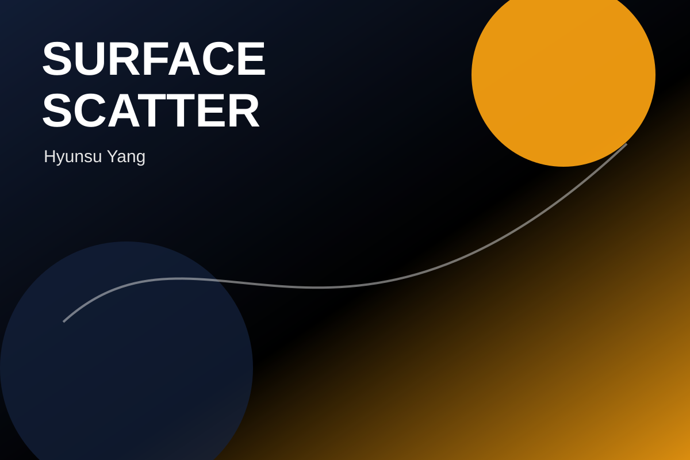

Status
- This page is reserved for the upcoming Surface Scatter project.
- Replace the notes, image, and project details when the work is ready.
Suggested Structure
- Goal: what problem the tool or setup solves.
- Process: how it works at a production or artist-workflow level.
- Technical Details: specific APIs, math, DCC constraints, or pipeline decisions.
- Delivery: GitHub, ArtStation, reel clip, downloadable file, or documentation.